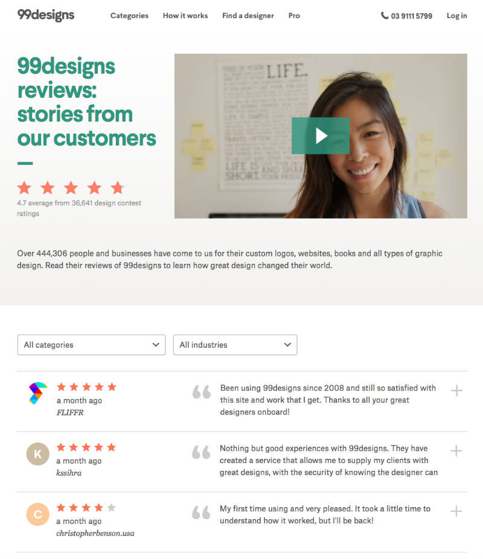
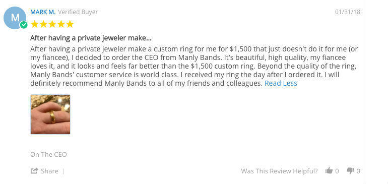

Generating customer referrals is one of the most powerful and time-tested ways to grow any business. When someone you trust recommends a business, you listen.
If you haven’t seen it already, this classic study shows a clear correlation between customer referrals and growth rate.
Companies who carry a relatively high net promoter score (NPS) grow faster than companies with lower scores across three major industries - car rentals, internet service providers, and airlines. Support and product leaders at most software companies now all use NPS strategies throughout their own customer journeys.
But how do you supercharge these referrals even further?
Enter your support conversations. Working quietly in the background of almost every successful organization is a team of dedicated support agents and managers talking to a significant number of your current and future customers every day.
Here are five easy ways your support team can start generating more referrals from these conversations.
Ask for a public review - at the right time
When looking to build up client referrals and solid customer loyalty, your best foot forward is to ask.
Ashley King implemented just this approach during her time as Director of Support at 99designs. “If someone is on the phone with an agent and they say, ‘Wow, I couldn’t have done this without you,’ we say, ‘You know what, it would be wonderful if you could leave a review on these sites, if you feel comfortable.’ That works really well.”

Source: 99designs
Keep in mind the main ingredient to this approach is timing. If you are already receiving positive feedback from clients, pivot them towards a medium where their voice really carries weight.
The worst outcome? They say no.
Contact your promoters directly
Sending out timely NPS surveys is another key way to identify some of your brand’s most enthusiastic ambassadors.
Ashley goes on to elaborate,
We survey every customer to ensure we get well-rounded results. They get an NPS survey and can leave comments, which allow us to get a great understanding of both ends of the survey spectrum — the good and the bad.
Implementing a prompt NPS initiative will provide you fresh and timely opportunities to request a referral from the right customers more frequently. For the less than favourable scores, it will give you the possibility to turn a negative perspective around, which in itself can be worth its weight in referral gold.
Help your customers every step of the way - not just after a sale
Many people say your brand is defined by the sum total of all experiences with your business. Similarly, your customer experience is defined by all steps in their journey to research, buy, use, and re-use your product. The more steps you take to care for your customer at all of these stages, the more likely they will be to talk about it.
That’s how Michelle Luchese, co-founder at Manly Bands approaches her support team strategy. She recognises that optimizing the buying experience isn’t just about sending a thank you email after the purchase or answering single post-purchase questions:
”[Our agents] think beyond the question. It really helps the customer feel at ease when they have all the info they need, or when they receive extra help.”
And reinforces:
“We continue to get rave reviews on the buying and exchanging/returning process. So much of our business is referrals from happy couples.”

In order to get great referrals from customers, you need to focus on keeping them happy every step of the way.
Do something extra
Most companies see long-lasting relationships as the result of a good product and ease of experience – but it goes deeper than that. Customers who care are customers who share. And so often the case, people care when they feel valued and cared for - so go the extra mile.
One of my favourite examples of a company who consistantly goes the extra mile is Warby Parker; a 1.2 billion dollar, (mostly) e-commerce outfit fitting your face with fashionable frames.
Neil Blumenthal, Warby Parker’s co-founder and joint CEO, goes on to highlight how they put that into practice, “Our customer-experience team is constantly looking for cues when they get an email, when they’re talking to someone on live chat.”
He goes on to explain, “We have had instances where [customers] start talking about Harry Potter, and then maybe we’ll order them a Harry Potter scarf and send them the latest Harry Potter book. Going above and beyond, that creates these great moments. And your community loves you for it.”
Me to me: Never stop, shamelessly, telling people about @WarbyParker pic.twitter.com/UxgtPdsiEs— Shaun A. (@Assnczech) January 17, 2018
Going that extra mile doesn’t require a huge spend or complex strategies, you just need to nurture an attitude of listening, reflecting and acting. It’ll not only deliver success but is one of the fundamentals of developing meaningful and long-lasting relationships with customers.
Solve customer problems from start to finish
We’re the first to admit it: building trust in a digital world can be tricky. But we also think building trust starts with your front line, AKA your support team.
Take Sendle for example. They’re disrupting the Australian postal system one happy customer at a time. Their Head of Support, Eva Schaller, highlighted the fact that postal domination wouldn’t be possible without the support of their first-class customer service team.
We want our customers to be successful and happy, and by doing this we’re creating positive word of mouth. When you send parcels, you’ll inevitably face issues, and the support team is there to solve problems and make the sending experience as easy as possible.
And the stats back it up, suggesting that 83% of customers will be more likely to recommend a trusted company to others and 82% will be more inclined to use that brand frequently.
Those are some figures we wouldn’t poke a stick at.